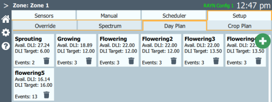
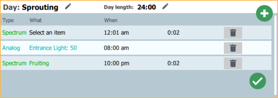
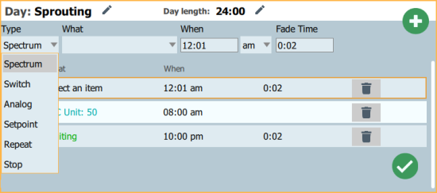

Setup > Day Plan
Note: RAYN Syrcadia on PC may be commissioned as Base or Unlocked. Syrcadia Base does not support day plans. The Setup > Day Plan tab will open directly into the editor, with the day plan already loaded into Zones > Scheduler.
A day plan defines what spectrum will be activated in a zone at what time within a specific 24‑hour period. Day plans may also be given an auto DLI target value to achieve.
Days can be used in crop plans for a full grow cycle, or loaded directly into the scheduler (see Zones > Scheduler).
Day plans can also activate setpoints (see Settings > Setpoints), functions (see Settings > Functions), and outputs (see Settings > Outputs) to control connected devices (see Settings > Devices).
Creating and Editing Day Plans

Select the + button in the upper right corner of this tab to add a new untitled day. Select the day tile to edit the day’s settings. Select the trash can button on a day tile to delete that day plan.

To specify a day name, a day length, or an auto DLI target, select the day to open the editor and press the pencil button to the right of the desired field in the upper left corner. Type the name, day length, or target value, and then select the green check mark button to confirm. Select the red X button to cancel.
Day Plan Steps
To add new steps to the day plan, select the green + button in the upper right corner of the editor. To edit an existing step, select the step to select it, and use the boxes at the top of the day plan window to make the desired changes. To delete a step, select the trash can icon on the step to be deleted. When editing is completed, select the green check mark button in the lower right corner of the editor to return to the Day Plan tab.

A variety of step types and options are available:
- Spectrum - activate a spectrum.
- What - an existing spectrum in Setup > Spectrum.
- When - the time the spectrum will activate.
- Fade Time - the time it will take for the spectrum to fade in.
- Switch - turn a relay on or off.
- What - an existing relay in Settings > Devices or MQTT output device in Settings > Outputs.
- Value - on or off.
- When - the time the device will switch on or off.
- Analog - send a level to a dimmer.
- What - an existing dimmer in Settings > Devices or MQTT output device in Settings > Outputs.
- Value - dimmer level expressed as a percentage (0-100).
- When - the time the dimmer will go to the specified level.
- Setpoint - set a specific measureable value to be monitored by a function in Settings > Functions.
- What - an existing setpoint in Settings > Setpoints.
- Value - any numerical value. If the measured value goes a specified amount above or below the setpoint value, an associated function can activate or deactivate other devices in your system.
- When - the time the setpoint will be set to the specified value.
- Repeat - turn a device on at regular intervals.
- What - an existing device in Settings > Devices.
- When - the time the device will first turn on.
- On - how long the device will stay on, measured in seconds, minutes, hours, or days.
- Interval - how long after the device turns off before it turns on again, measured in seconds, minutes, hours, or days.
- Stop - turn a device off at a specific time.
- What - an existing device in Settings > Devices.
- When - when the device will turn off.